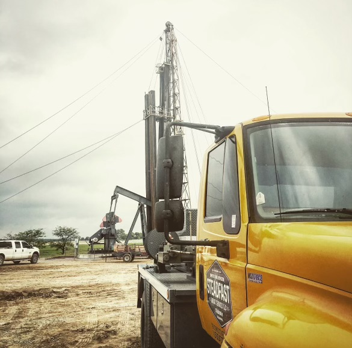

SteadFast
Energy Services

About us
Expert Field Operation:
- At SteadFast, our field operation are spearheaded by experienced professionals like myself who specialize in setting up and operating essential equipment on oil rigs.
- Our expertise ensure seamless integration of mechanical and hydraulic tool essential for rig operations.
Precision in Tool Setup and Operation:
- We begin our on-site operation with meticulous tool setup, coordinated by a dedicated crew of four.
- Communication and precision are our hallmarks, ensuring every component fits perfectly to support safe and efficient rig activity.
Specialized in Tubing Testing and Diagnostic Services:
- I lead our efforts in test tubing, specializing in sizes 2 3/8, 2 7/8, and 3 1/2.
- Our testing range from 4,000 psi to 8,000 psi, with capabilite to go higher.
- Additionally, Steadfast operate an advanced scanning service, employing cutting-edge technology to assess the integrity of tubing walls.
- Our scans meticulously check for thickness, ensuring the tubing can withstand necessary pressure, and identify any imperfections, such as holes or thinning areas, that could compromise safety and efficeny.
Contact Information